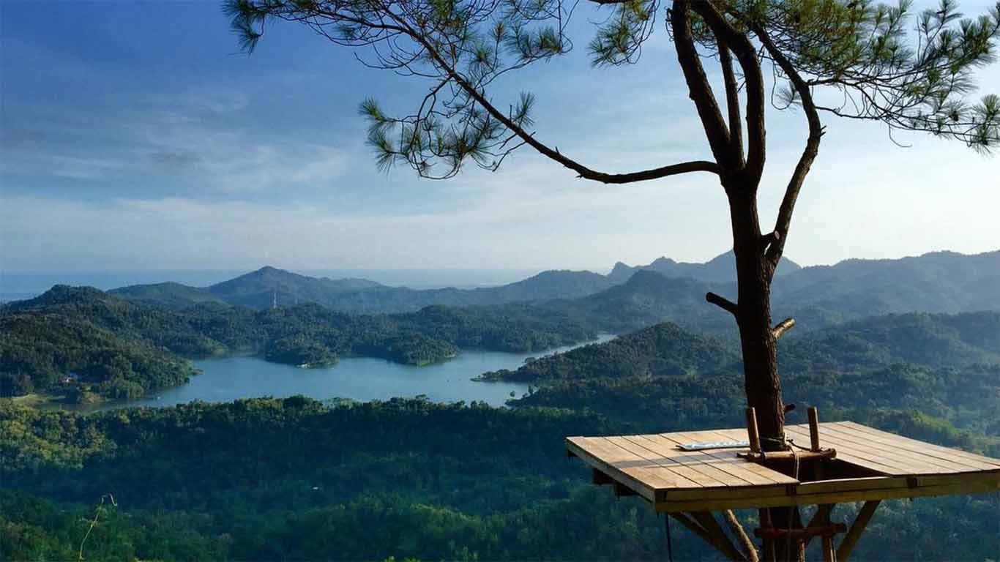

Sejarah
Pada tahun 1674, Keraton Mataram, Yogyakarta diserang oleh Trunojoyo yang mendapat bantuan dari Makasar mengakibatkan kerusakan pada Keraton dan terdesaknya Amangkurat I melarikan diri untuk meminta bantuan kepada Belanda, hingga meninggal di Tegal dalam pelariannya. Untuk mengantisipasi serangan dari pengikut Trunojoyo, pada tahun 1677 keraton Mataram di pimpin oleh Amangkurat II yang merupakan putera mahkota dari Amangkurat I meminta bupati Ponorogo untuk mendapatkan penjagaan keraton oleh bala Warok yang terkenal pandai dalam perang dan meminta bantuan kepada kolonial Belanda untuk menangkap Trunojoyo.
Setelah dijaganya keraton Mataram oleh para Warok dari Ponorogo, Tronojoyo kesulitan menembus keraton dan ditangkap serta dijatuhi hukuman mati pada tahun 1679. Para Warok yang berhasil menjaga Keraton mendapat hadiah tempat tinggal di sebalah barat keraton untuk memudahkan penjagaan keraton ketika terjadi penyerangan terhadap keraton. Keraton tersebut diberi nama Kulon Ponorogo hingga di kenal saat ini menjadi Kulon Progo yang berarti Keraton Mataram sebelah Barat Ponorogo.
Daerah yang saat ini termasuk wilayah Kabupaten Kulon Progo hingga berakhirnya pemerintahan kolonial Hindia Belanda merupakan wilayah dua kabupaten, yaitu Kabupaten Kulon Progo yang merupakan wilayah Kasultanan Ngayogyakarta Hadiningrat dan Kabupaten Adikarto yang merupakan wilayah Kadipaten Pakualaman. Kedua kabupaten ini digabung administrasinya menjadi Kabupaten Kulon Progo pada tanggal 15 Oktober 1951.